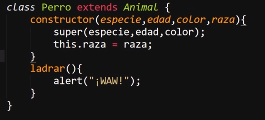
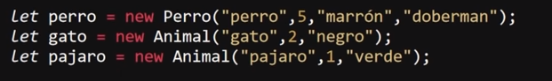

La "herencia" se basa en generar una clase "hija" que sea capaz de utilizar todos los métodos y atributos de su predecesora a la vez que añade atributos y métodos propios, por supuesto que se puede definir cuáles de los atributos heredará, ya que si alguno de estos no es necesario simplemente puede ser ignorado y de ese modo la clase hija no poseerá este atributo, sin embargo podrá hacer uso de todos los métodos de la clase original.
La herencia es un concepto unilateral, lo que significa que únicamente la clase hija puede hacer uso de los atributos y métodos de la clase padre y no al revés.
La estructura de la declaración de una clase hija es similar a la de una clase normal, ya que también se inicia empleando la palabra reservada "class" seguido del nombre de la clase y de las llaves ( { } ) que almacenan el bloque de código, también es necesario indicar un constructor para lo cual se sigue empleando la palabra reservada "constructor" el cual a su vez sigue manteniendo su estructura, sin embargo se diferencia en:
-
Entre el nombre de la clase y las llaves del bloque se ingresa la palabra clave "extends" seguido del nombre de la clase padre, de este modo se indica que se trata de una clase hija y se indica de cuál clase heredará sus atributos y métodos.
-
El constructor vuelve a definir los datos que utilizará dentro de paréntesis, sin embargo no es necesario que se vuelvan a definir los atributos ya establecidos en la clase padre, para heredar estos atributos se emplea la palabra clave "super" seguida de paréntesis "()" los cuales albergarán los nombres de los atributos a heredar, a su vez dentro de este constructor se puede definir nuevos atributos propios de la clase hija, para hacerlo se sigue el mismo procedimiento que el de la clase padre: se incluye dentro de los datos que empleará el constructor y se define utilizando la palabra clave "this.".
De este modo la clase hija heredará los atributos seleccionados a la vez que todos los métodos de la clase padre, a la par que será capaz de generar sus propios métodos y atributos.
Ejemplo

En este ejemplo se puede apreciar la estructura de la declaración de una clase hija llamada "Perro", la cual hereda los atributos y métodos de la clase "animal" (su nombre se cambió a Animal), la cual ha sido empleada en los ejemplos anteriores, a la vez que añade un nuevo atributo llamado "raza" y un nuevo método llamado "ladrar".
El uso y llamado de una clase hija es exactamente igual al de una clase normal, no se diferencia en nada.

En este segundo ejemplo se genera un objeto "perro" con la clase "Perro" junto con los objetos "gato" y "pájaro" utilizando la clase "Animal".
Nota: No se puede definir un objeto con el mismo nombre que la clase.
Nota: A su vez la clase padre no puede usar ni los atributos ni métodos de las clases hijas.